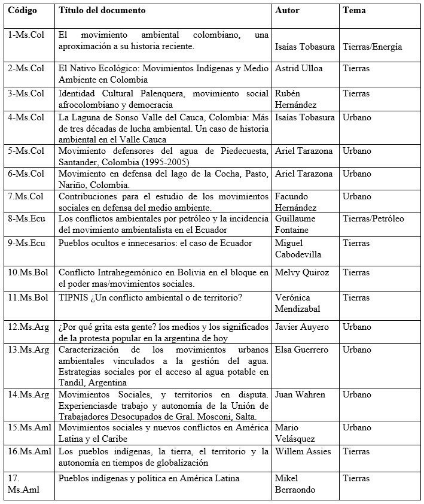
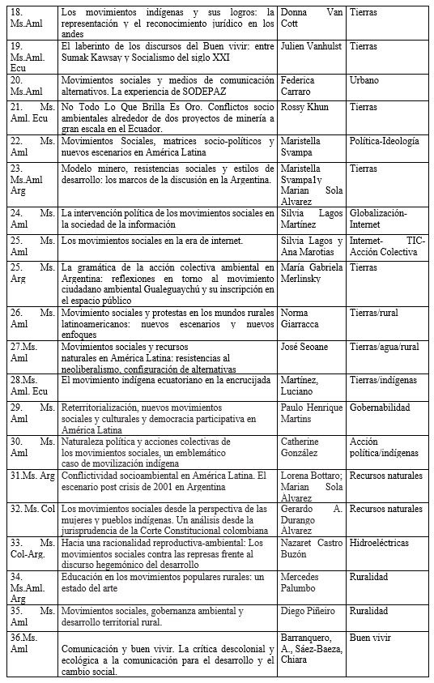
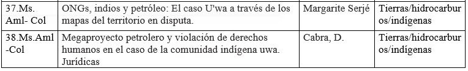

Movimientos sociales ambientales en América Latina: otros escenarios para los estudios en Comunicación
Environmental social movements in Latin A: other scenarios for studies in Communication
Gladys Adriana Espinel-Rubio1* , Jaqueline Estévez-Lizarazo2 , Eduardo Albán-Gallo3
 1Magíster en Estudios Políticos Latinoamericanos, gladysespinel@ufps.edu.co, ORCID: 0000-0002-8796-9257, Universidad Francisco de Paula Santander, Cúcuta, Colombia
1Magíster en Estudios Políticos Latinoamericanos, gladysespinel@ufps.edu.co, ORCID: 0000-0002-8796-9257, Universidad Francisco de Paula Santander, Cúcuta, Colombia
 2Doctora en Ciencias de la Comunicación y la Información, Jaqueline.estevez@upb.edu.co, ORCID: 0000-0003-4624-955X, Universidad Pontificia Bolivariana, Bucaramanga, Colombia
2Doctora en Ciencias de la Comunicación y la Información, Jaqueline.estevez@upb.edu.co, ORCID: 0000-0003-4624-955X, Universidad Pontificia Bolivariana, Bucaramanga, Colombia
 3Máster en Ciencias Políticas, edualban@usal.edu.co, ORCID: 0000-0002-4751-3749, Universidad de Salamanca, Salamanca, España
3Máster en Ciencias Políticas, edualban@usal.edu.co, ORCID: 0000-0002-4751-3749, Universidad de Salamanca, Salamanca, España
Cómo citar:
cite:G.A Espinel-Rubio, J. Estévez-Lizarazo, E. Albán-Gallo, “Movimientos sociales ambientales en América Latina: otros escenarios para los estudios en Comunicación ”. Perspectivas, vol. 5, no. 1, pp. 22-38, 2020.
Received: August 05, 2019; Approved: November 10, 2019.
© Peer review is the responsibility of the Universidad Francisco de Paula Santander. This is an article under the license CC BY-NC-ND 4.0

ABSTRACT
This article identified the repertoires of confrontation, which from the communication and the traditional and / or alternative media, have been the object of study in the investigations on the environmental social movements (MSA) in Colombia, Argentina, Ecuador and Bolivia between 2000-2017. It is a qualitative, documentary research that uses the bibliographic approach. For her, the theoretical and methodological frameworks were identified, and the topics addressed, especially those related to Social Communication as a field of study or discipline. It could be determined that, although there is a corpus related to MSAs in Latin America, especially for Mexico and Brazil, the studies are approached from the other Social and Human Sciences; the communicative or the media is played tangentially. It was determined that in the face of the irruption and positioning of environmental social movements in the continent, inspired not only by the protection of Mother Earth or the territories laden with senses and cosmogony, but by the imminent climate change, added to the positioning of thinking bets like Buen Vivir, it is imperative for Latin American communication schools to open up to new questions about the communicative practices, tactics and / or strategies inserted in the confrontation repertoires of the MSAs.
Keywords:Communication; social movements; environment; Latin America; confrontational repertoires
RESUMEN
Este artículo identificó los repertorios de confrontación, que desde la comunicación y los medios tradicionales y/o alternativos, han sido objeto de estudio en las investigaciones sobre los movimientos sociales ambientales (MSA) en Colombia, Argentina, Ecuador y Bolivia entre el 2000-2017. Es una investigación cualitativa, documental que utiliza el enfoque bibliográfico. Para ella se identificaron los marcos teóricos y metodológicos, y las temáticas abordadas, especialmente, las vinculadas con Comunicación Social como campo de estudio o disciplina. Se pudo determinar que, aunque existe un corpus relacionado con los MSA en Latinoamérica, especialmente para México y Brasil, los estudios son abordados desde la otras Ciencias Sociales y Humanas; lo comunicativo o lo mediático se toca tangencialmente. Se determinó que frente irrupción y posicionamiento de los movimientos sociales ambientales en el continente, inspirados no solo en la protección de la Madre Tierra o de los territorios cargados de sentidos y cosmogonías, sino por el inminente cambio climático, sumado al posicionamiento de apuestas del pensamiento como el Buen Vivir, es imperativo para las escuelas de comunicación latinoamericanas abrirse a nuevas preguntas sobre las prácticas comunicativas, tácticas y/o estrategias insertas en los repertorios de confrontación de los MSA.
Keywords: Comunicación; movimientos sociales; medio ambiente; Latinoamérica; repertorios de confrontación
Introducción
En década de los 80, los asuntos referentes a la energía nuclear, incentivaron la aparición de movimientos sociales ambientales (MSA) que buscaban alternativas para evitar su expansión, considerada un inminente peligro para la humanidad. En Europa y Norte América, los movimientos centraban sus acciones contra los gases tóxicos provocados por las grandes industrias y en América Latina, sus agendas se basaron en una constante confrontación con el Estado para hacer efectivos los derechos constitucionales: el derecho a la vida y a la salud, afectadas por la explotación de los recursos naturales y minerales por parte de las multinacionales y por el mal manejo residuos; y el derecho a la tierra, puesto que las grandes zonas de exploración provocaron el desplazamiento de miles de familias. (Rojas Garzón & López Jiménez, 2017)
En la Amazonía ecuatoriana, los MSA surgen como respuesta a la destrucción del medio ambiente provocado entre 1964 y 1990 por la multinacional Texaco, debido al alto índice de contaminación que esta empresa dejaba a su paso por la extracción del petróleo sobre las selvas. En Colombia, se destacó la lucha de los indígenas U´wa, una étnia de ubicada en los departamentos de Norte de Santander, Santander, Casanare y Arauca, que se presentaban como víctimas de intervenciones del Estado y las multinacionales por la extracción de petróleo en sus tierras ancestrales; el petróleo es considerado la sangre de la Pacha Mama o madre tierra. Este conflicto tuvo sus inicios en 1991, cuando Ecopetrol firmó un contrato con la OXY (Occidental Petroleum Corporation NYSE) para una exploración petrolera por el periodo de 28 años y persiste hasta la fecha.
Desde entonces, los MSA en Latinoamérica, inspirados en la protección de la Madre Tierra, los territorios cargados de sentidos y cosmogonías, unido al inminente cambio climático y las apuestas del pensamiento como el Buen Vivir (Sempere, Acosta Abdallah y Ortí, 2010; Vanhulst y Belinghan, 2013; Vanhulst, 2015) profundizado y ampliado sus repertorios de confrontación, por lo que es imperativo para la investigación en Comunicación abrirse a nuevas preguntas sobre las prácticas comunicativas, tácticas y/o estrategias utilizados.
Este estudio no incluyó en su corpus las profusas investigaciones sobre MSA de México y Brasil, con el objetivo de ampliar la perspectiva hacia otros países latinoamericanos menos revisados desde esta lógica. Para el caso de Argentina, donde la defensa del agua en Santiago del Estero fue objeto de diversos análisis, estos aparecieron antes del 2000, por cuanto quedaron excluidos del periodo estudiado, salvo las excepciones recogidas en este trabajo.
Los estudios sobre la relación movimientos sociales- internet han sido suficientemente abordados desde el enfoque de los usos y apropiaciones de las plataformas digitales, el ciberactivimo entre tanto, avanzan sobre las discusiones teórico conceptuales hacia la tecnopolítica, pero si se intenta determinar cuáles son las tendencias en la comunicación de los movimientos sociales ambientales (MSA) en el subcontinente, no es posible configurar un mapa completo, por lo que hay más preguntas que respuestas.
No hay duda en que los MSA han incluido en sus repertorios nuevas maneras de protesta y medios más eficaces para hacer circular la información a través de las TIC tal como ha ocurrido con otros movimientos sociales. Las plataformas tecnológicas han empezado a ser usadas como mecanismos de presión al Estado o de algún sector económico, sin embargo, a diferencia de otros, que han logrado convertirse, incluso, en apuestas políticas electorales, re organizando el sistema de partidos, las transformaciones en lo medioambiental o se dan de manera tangencial y sin impacto real comprobable o siguen sin darse.
El análisis de la bibliografía alojada en bases de datos como Google Académico, Proquest, Scielo Latinoamérica, además los repositorios de Flacso y Clacso, publicado en entre el 2000 y el 2017 y que tuviera como objeto de estudio los MSA en Colombia, Ecuador, Argentina y Bolivia abrió preguntas como: cuáles son sus prácticas discursivas; cómo construyen sus mensajes para ganar seguidores de sus posturas; de qué manera se enfrentan desde lo que comunican a las propuestas desarrollistas de los Estados con economías emergentes; cómo ‘combaten’, la lógica de que el bien general prima sobre el particular, premisa en la que se basan los gobiernos para sustentar las apuestas por la explotación minera a cielo abierto, de petróleo con fracking o la construcción de carreteras de cuarta generación-4G. Tampoco se han analizado sus apuestas organizacionales internas: cómo se dan sus flujos de comunicación, qué las caracteriza; ni de qué manera sus prácticas culturales permean a los vecinos con quienes comparten territorios (en zonas, por ejemplo: indígenas-afros; campesinos mestizosindígenas; mestizos rurales-urbanos).
Los movimientos sociales en América Latina
Una explicación de la evolución de los estudios sobre los movimientos sociales (MS) fue realizada por Palumbo (2014). Desde su perspectiva, los abordajes de la categoría movimientos sociales han estado asociados al enfoque clásico que los relaciona con el movimiento obrero y desde allí se desarrollaron tres tradiciones: la marxista, el paradigma funcionalista y las teorías psicológicas de masas. No obstante, en América Latina se identifican tres aparatos para su comprensión: la teoría de la movilización de recursos, el enfoque de las oportunidades políticas y la teoría de los nuevos movimientos sociales, este último, “abandona el aspecto organizacional de corte instrumental de la academia norteamericana para focalizar la gestación de marcos de significados, identidades colectivas y proyectos históricos para la sociedad” (P. 33). Así, la investigación de los movimientos sociales en América Latina entre las décadas de los 50 a los 70 estuvo marcada por la teoría funcionalista; ya en los 80 se efectuaron abordajes empíricos desde la óptica europea, teniendo como base los movimientos zapatistas, en México; de los trabajadores rurales sin tierra MST, en Brasil y de Santiago del Estero en Argentina, relacionados con el contexto de transición de las dictaduras.
En esta trayectoria, Palumbo (2014) propuso un desplazamiento semántico de la categoría movimientos sociales a movimiento popular en el subcontinente, lo que implicó “repensar la particularidad de estas formas de acción colectiva en América Latina, recuperar la clase social como dimensión interviniente – junto a otras – en los fenómenos sociales; y abrir a nuevas líneas de investigaciones poco exploradas”, (P. 25). Estos movimientos populares están caracterizados por cuatro dimensiones: a) la concepción del territorio; b) las vinculaciones con la institucionalidad; c) las relaciones sociales cotidianas; y, d) el carácter político-pedagógico de las prácticas (P. 39)
Para Zibechi (2005) las características los movimientos sociales latinoamericanos son la apropiación material y simbólica de los territorios con base en la conquista de los espacios físicos; la autonomía frente a instancias como partidos políticos y Estado; la valoración de la cultura y las identidades invisibilizadas (como las étnicas); la formación de sus propios intelectuales y dirigentes, así como la creación de instituciones de educación formal a su cargo. Precisamente para el tema que atañe a este artículo, es inminente la preocupación por la interacción con la naturaleza con base en las novedosas relaciones técnicas y sociales de producción para evitar la cosificación del medio ambiente, para abandonar la reproducción de relaciones de sometimiento y subordinación; y, por último, la decisión por acciones auto-afirmativas, como la recuperación de fábricas y la toma de tierras, dejando atrás acciones únicamente defensivas.
Otra parte de la discusión corresponde al hecho de que el término ‘movimientos sociales latinoamericanos’, por sus características únicas, debería transformarse a ‘nuevos y emergentes movimientos sociales’, por consiguiente, dentro de la comunidad académica latinoamericana no existe un concepto consensuado de MS, marcado por sus diferentes manifestaciones como movimiento obrero, estudiantil, ambiental, feminista, de minorías sexuales o antiglobalización.
Mejías y Suárez, (2017) son quienes proponen utilizar en América Latina, a pesar de los cuestionamientos, el concepto de nuevos y emergentes movimientos sociales, ya que concentran una idea “de proyecto histórico transgresor al orden que adquieren los derechos sociales en la sociedad capitalista” (P.98), pues justamente en la actualidad diversas comunidades, sectores o grupos de personas se organizan tras las reivindicaciones o demandas con al menos, tres singularidades: diferentes contenidos, amplios objetivos, reposicionamiento de otros discursos, y en ese marco característico:
han desarrollado tácticas diversas en función de sus objetivos, han utilizado diversas plataformas para transmitir sus mensajes, han desarrollado múltiples formas de participación e inclusión y han intentado construir democracia de base para co-construir incipientes espacios de poder popular en perspectiva de la consolidación de la justicia social (P.101)
Baraldo (2010) coincide con la denominación de movimientos populares puesto que se refieren a las expresiones organizativas a partir de las cuales, las clases subalternas han construido en sus confrontaciones en la fase capitalista neoliberal y, por ende, en su desarrollo, la lucha de clases continúa como un eje central en el ejercicio de su comprensión.
Piug (2014) define los movimientos sociales como “actores políticos colectivos reconocidos (con mayor o menor entusiasmo) en las democracias contemporáneas que se activan a través de movilizar a sus simpatizantes y que persigue cambios y transformaciones a través de acciones fuera de los espacios institucionales’’ (p.3). Señala que, aunque los movimientos sociales hacen parte de los actores políticos colectivos, se diferencian de los partidos políticos o grupos de presión al tener una relativa estabilidad organizativa, una comunidad de objetivos, ideas e intereses entre sus miembros, una línea de acción coordinada y organizada y finalmente, la voluntad de intervenir en la política incidiendo así en la gestión de un conflicto social. Los movimientos sociales manejan un discurso transversal, una estructura orgánica débil, una política contenciosa y sus recursos suelen ser de carácter simbólico.
Referentes de la escuela norteamericana como Tilly (2008) conceptualiza la movilización como una relación entre las elites y los actores colectivos, que, a su vez, luchan en nombre de los desprotegidos o marginados, mediante la política no convencional. A su vez, Tarrow (1994) define los movimientos sociales como aquellos “desafíos colectivos planteados por personas que comparten objetivos comunes y solidaridad en una interacción mantenida con las élites, los oponentes y las autoridades’’ (P.21).
El concepto planteado lleva implícitos factores como la organización, caracterización y comunicación de movimientos. Tarrow (1977) propuso tres de estos para explicar el surgimiento de los movimientos: El cuándo, el cómo y el porqué. El primero hace referencia a la coyuntura o punto de quiebre que da paso a su aparición, esto a su vez y en gran medida, explica el cómo y el por qué. Este punto de quiebre se le denomina: las estructuras de oportunidades políticas (EOP).
El concepto EOP “pone énfasis en los recursos exteriores al grupo que reducen los costes de la acción colectiva, descubren aliados potenciales y muestran en qué son vulnerables las autoridades” (Piug, 2014, p.3). Estas coyunturas se dan cuando dentro de las élites de gobierno se presentan fisuras, lo que posibilita la alianza de éstos con movimientos sociales; cuando los movimientos sociales consiguen aliados dentro de los sectores influyentes de la sociedad. Entre ellos se puede resaltar el poder judicial y la iglesia; y que la lucha local coincide con la internacional. Es decir, cuándo en el ámbito internacional existe una coyuntura similar a la que se vive en el contexto local, en el mismo periodo de tiempo pueden crearse procesos de movilización en cadena.
Las EOP, entendidas como el modo y los factores que influyen en la aparición de los movimientos sociales, en definitiva, determinan su posterior acción y modos de actuar denominados repertorios de confrontación, concepto que fue acuñado por Tilly (1986) en The Contentious French definiéndolo como “la totalidad de los medios de que dispone un grupo para plantear exigencias de distinto tipo o a diferentes individuos o grupos” (P.2).
Sin embargo, el autor resalta que este concepto puede tener tres momentos. En primer lugar, donde es meramente explicativo y débil, viéndolo como una metáfora que recuerda que los movimientos sociales tienen una serie de acciones que pueden llegar a ser recurrentes y esto a su vez permite que sean reconocidas e identificables por los diferentes actores y observadores; en un segundo momento, denominado como ‘intermedio’ explica un modelo donde la experiencia que se gana con el transcurso del tiempo, interactúa con las estrategias de mando y se hacen mejores y más eficaces las formas de actuar; finalmente, un tercer momento que se denomina como ‘fuerte’ y es de manera concreta, una propuesta ya pensada donde existen modos de actuar bien definidos.
Se puede llegar a concluir, pues, que un repertorio de confrontación es un concepto que al mismo tiempo es estructural, cultural e histórico (González C., 2011). A su vez Tilly (2009) señala que los cambios de repertorios van ligados a factores netamente históricos y que éstos a su vez están relacionados con la fluctuación de intereses, a las oportunidades y a la organización con relación en los diferentes cambios que pueda tener el Estado.
Así, los movimientos sociales buscan, además de materializar sus reivindicaciones o propuestas, comprender, consciente o inconscientemente, la generación de ‘otros’ conocimientos, ‘otras’ tácticas, ‘otras’ miradas y subjetividades fundamentales para edificar opciones de sociedades posibles (Mejías y Suárez, 2017).
La comunicación como campo de estudio y los movimientos sociales
Para esta revisión documental se tuvieron en cuenta, además de las áreas temáticas, los marcos teóricos y metodológicos, observando, aquellos relacionados con la Comunicación Social como campo de estudio, por lo tanto, fue importante poner en discusión las preguntas, métodos y marcos teóricos que han sido revisados en Latinoamérica por (Pereira, 2005), Torrico (2004), (De la Peza, 2013), (Vidales, 2017), entre otros.
Respecto al objeto de estudio de la comunicación, Torrico (2004) señala que este no corresponde a un componente social aislado sino al “proceso social de producción, circulación mediada, intercambio desigual, intelección y uso de significaciones y sentidos culturalmente situados” (p. 21) y dado su carácter multidimensional, es imposible dejar un lado la interdisciplinariedad de la Comunicación, que se particulariza “a partir de la convergencia e interacción trasversales en el estudio de un tipo específico de relación social –el de la producción e intercambio de símbolos- y de las disputas por el sentido válido que tal relación genera” (Torrico, 2004, p. 27), por lo tanto, la Comunicación es un campo en el que se mueven agentes e instituciones que tensionan estrategias y reglas por el control de un capital gnoseológico concreto y dinámico, aprehendido a través sinergias disciplinares.
Por su parte, De la Peza (2012) refiriéndose a la discusión sobre la comunicación: campo de estudio o disciplina, concluye, que la constitución en disciplina significaría cerrar un proceso “muy estimulante y creativo que está en curso, y sacrificar la posibilidad de hacer investigación desde las múltiples fronteras de la comunicación con todas las disciplinas sociales y humanas, que ha permitido abrir nuevos horizontes al conocimiento científico” (P. 29). Pereira (2005) planteó que la Comunicación, más que una disciplina, debía comprenderse “como campo transdisciplinario emergente en marco de la reestructuración de las Ciencias Sociales de los últimos años en el mundo” (p.19); en ese sentido, Vidales (2017) avanza proponiendo a la Comunicación como un concepto transdisciplinar lo que supone además, “la inclusión de una visión sobre los objetos de conocimiento, sobre los procesos de construcción de conocimiento y sobre las posibilidades de otras narrativas históricas” (p.59).
Con relación a los estudios comunicativos sobre los movimientos sociales, Montero- Díaz et. Al (2018) encontraron que la categoría ‘Activismo’ en las investigaciones en el campo de la Comunicación surge en el período 2000-2009 y cubre aspectos sobre movimientos sociales y protestas. También, se ha abordado desde la relación medios- activismo democrático y medios alternativos. Llama la atención que entre el 2010 y el 2013 (año que abarca su estudio) las investigaciones se centraron en la personalización de acciones colectivas y crecimiento de los movimientos sociales en el mundo; no obstante, lamentan que haya fragmentación y desconexión en las 16 áreas temáticas identificadas bajo la categoría Communication en la Web of the science (WOS).
Al determinar la existencia de una Escuela Latinoamericana de Comunicación, con base en las tendencias investigativas, González-Samé, Romero-Rodríguez y Aguaded (2017) hallaron que los movimientos sociales y las luchas indigenistas y afrodescendientes, feministas, socialistas, además de las lideradas por diversos movimientos de liberación nacional y luchas civiles –en especial contra las dictaduras militares, han sido abordados desde la percepción sociológica y antropológica de los procesos comunicativos.
Herrera y Urburu (2009) concluyeron que entre los temas poco explorados en la investigación desde la perspectiva de la comunicación para el cambio social en Colombia estaban los movimientos sociales, quedándose así por fuera del circuito investigativo ambientales, pese a que en los últimos 15 años se han extendido y profundizado en el subcontinente “provocados por la incesante voracidad del capital por subsumir cualquier ámbito que no se encuentre plenamente ceñido o regulado por los ordenamientos de la producción de valor” (Navarro, 2014, P. 139).
Barranquero y Limón, (2017) señalan entre el 2007 y el 2013 la carencia de tesis doctorales españolas dedicadas a abordar las estrategias tecnológicas de los movimientos sociales con relación a la variedad de proyectos investigación y desarrollo (I+D) dedicados a este tema e invitan a revisar las investigaciones publicadas en revistas o congresos científicos durante el mismo periodo (2007-2013) para efectuar una comparación. Asumen que, dado el vertiginoso aumento de interés en la comunidad académica por el uso de Internet, las redes sociales o la tecnología móvil por parte de la sociedad civil desde 2011, la temática tendría un mayor reflejo en las tesis doctorales defendidas a partir de 2014.
Pese a la escasez de investigaciones que reportan estos autores, a través del tiempo “los movimientos sociales siempre han dependido de la existencia de mecanismos de comunicación específicos: rumores, sermones, panfletos y manifiestos, divulgados de persona a persona desde el pulpito, la prensa, o por cualquier medio de comunicación disponible” (Castells, 2012, P.32). Sin embargo, con el desarrollo de las TIC han ido evolucionando los movimientos sociales en términos de comunicación ya que ahora es más horizontal interactiva y autoconfigurable, como consecuencia de esto existe una menor jerarquía y mayor participación entre sus miembros dando lugar a una mejor organización.
En este orden de ideas Castells (2012) señala que:
Para esta revisión documental se tuvieron en cuenta, además de las áreas temáticas, los marcos teóricos y metodológicos, observando, aquellos relacionados con la Comunicación Social como campo de estudio, por lo tanto, fue importante poner en discusión las preguntas, métodos y marcos teóricos que han sido revisados en Latinoamérica por (Pereira, 2005), Torrico (2004), (De la Peza, 2013), (Vidales, 2017), entre otros.
Por otro lado, Rincón (2001) en contraposición a lo dicho por Castells propone que:
los medios masivos de comunicación, así como los movimientos sociales, presentan una preocupante actividad de desconexión en la comunidad, porque, en lugar de crear lazos sociales, fomentan la fragmentación de la vida civil. Este efecto de sentido y de vida social es el logro de haber convertido tanto a los medios masivos como a los movimientos sociales en lugares de ejercicios estratégicos del poder (p.12).
Además, los medios de comunicación realmente no utilizan adecuadamente la información, ya que son regidos por conveniencia política, causando la desinformación y la invisibilidad de los problemas de la sociedad. Como lo expresó López de la Roche (2002) “Los medios, cubriendo movimientos sociales, terminan dando partes de orden público, partes de normalidad o de anormalidad, pero difícilmente escudriñan los problemas ocultos bajo esa normalidad” (P. 23).
Para Candón (2011) dado que la red no es suficiente aún para lograr altos impactos de difusión que tienen los medios masivos, los MS siguen tratando de ser incluidos en la agenda periodística, “como un recurso externo sobre el que carecen de control”, y aunque haya, “una valoración profundamente crítica de los mismos, los movimientos hacen un uso estratégico de los medios convencionales para tratar de alcanzar a un público masivo”, (P 362).
La Rosa (2016) siguiendo a Conover, Davis, Ferrara, McKelvey, Menczer y Flammini (2013: 1) plantea que los movimientos sociales deben centrarse en dos elementos para alcanzar sus fines: la movilización de recursos y el enfoque colectivo, este último entendido como la capacidad de construir “narrativas e imaginarios que recojan lo sustancial de la protesta para posicionarla de manera apropiada” (La Rosa, 2016, p 54).
Frente a este escenario, se inserta la discusión sobre las posibilidades de comprender la Comunicación para el cambio social, como una apuesta teórica y metodológica para interpretar los MSA en América Latina. Barranquero (2012) al referirse a la comunicación para el desarrollo y el cambio social, propone pensarla como un área de investigación y acción “en torno al binomio dialéctico comunicación-justicia ecosocial y buen vivir”; invita así a dar un giro a la pregunta y dejarla “¿cómo pensar la justicia ecosocial y la vida buena desde la comunicación y la cultura?”, (p. 74). Por su parte, Díaz, Bohóquez-Pereira y Rueda (2019) consideran que es una apuesta “por indagar sobre las prácticas sociales y la participación como elemento fundamental para generar cambios sociales colectivos” (p.123); igualmente, señalan la emergencia de desafíos que exigen reflexionar sobre el reconocimiento de los reclamos de la ciudadanía en el mundo globalizado lo que lleva a la aparición de nuevos actores sociales que transitan en la esfera pública y en las Internet exigiendo respuestas de manera crítica sobre las políticas públicas, los derechos humanos y la gobernabilidad, y por ende, el cambio social.
Se apunta así, al planteamiento de una ciencia híbrida que se base “en el quehacer y la reflexión menos institucionalizada de las prácticas de base, los saberes oriundos o el media-activismo transformador” (Barranquero, 2012, p. 75), y que permita ver de qué manera la comunicación participativa (Díaz, et.al, 2019) es la vida misma de los movimientos sociales, para el caso, los ambientales, de tal modo que se genere no sólo una disciplina sino todo un programa de transformación total de los saberes que se edificaron sobre la apuesta de una razón modernizadora, sin conciencia ecológica y predadora de la naturaleza.
Metodología
Este estudio se orienta desde la investigación documental con un método bibliográfico, que incluye la recolección de la información, el procesamiento y la presentación de resultados. Desde este enfoque, se identificaron repertorios de confrontación que desde la Comunicación (mediática y alternativa) han sido objeto de estudio dentro de un corpus documental, estableciendo las relaciones y enunciados que posibilitan su “comprensión en el contexto determinado por los objetivos investigativos” (Salazar y Arévalo, 2018).
La muestra estuvo conformada por de 38 artículos resultado de investigación que fueron publicados en español y en revistas científicas que se encuentran en bases de datos como Google Académico, Proquest, y Publindex relacionados con los MSA de Colombia, Bolivia, Argentina y Ecuador.
El trabajo se desarrolló siguiendo las fases propuestas por Izaguirre et. Al (2017):
Fase 1. De identificación de las fuentes de información: se definieron los lugares y criterios de búsqueda. Este proceso incluyó la exploración de la web visible, así como de la invisible o profunda, definida como todos aquellos contenidos que no son accesibles mediante los motores de búsquedas tradicionales (Colombia Digital, 2014). Se tuvieron en cuenta Google Académico, Proquest, Publindex y los repositorios de Flacso y Clacso
Fase 2. Proceso de análisis de la información: estuvo orientado desde la técnica del análisis de contenido, para identificar los elementos teóricos, metodológicos y temáticos comunes, que permitieron hacer afirmaciones e interpretación sobre el objeto de estudio para construir finalmente, el apartado de resultados.
Fase 3. Presupuestos teóricos: a partir de la perspectiva del investigador, se relacionaron inferencias, interpretaciones y afirmaciones que conllevaron a efectuar una propuesta alrededor del tema que se expresa en las conclusiones.
Selección de la muestra
Si bien es cierto, existió una amplia producción sobre movimientos sociales en América Latina, los documentos seleccionados para la investigación debían cumplir con los siguientes criterios de inclusión:
* Abordar la temática de MSA
* Estar publicados en español.
* Corresponder a los cuatro países seleccionados
* Tener fecha de producción o publicación entre el 2000 y el 2017.
* Mencionar al menos un repertorio de confrontación de los MSA.
La revisión se dio desde el año 2000, dada la reactivación de los movimientos sociales, marcando la pauta el movimiento de resistencia a la globalización y el nuevo impulso que ofrecen a la reflexión-acción sobre la relación entre movimientos sociales y tecnologías (Barranquero y Limón, 2017). Para esta variable también se tuvo en cuenta la referencia el fin del milenio y la naciente preocupación de los diferentes países al nivel mundial por los temas ambientales como el cambio climático, esto se puede ver reflejado en tratados y convenios internacionales como: Objetivos del Milenio de las Naciones Unidas, en el año 2000; la Cumbre de la Tierra en Río en el 2012; la Cumbre del Clima de París en el 2015, avivadas por el Protocolo de Kyoto en 1997, como un hito importante dentro de los esfuerzos de los países y organismos internacionales por disminuir la emisión de gases de efecto invernadero que causan el calentamiento global.
Procedimiento para el análisis de la información
Una vez revisada la bibliografía sobre la investigación en Comunicación se evidenció la existencia de un vacío con relación a los movimientos sociales (Herrera y Urburu, 2009), (Barranquero y Limón, 2017), (Montero et. Al., 2018), especialmente en España y con base en la Web of Science (WOS). El objetivo fue identificar, si en América Latina pese a la irrupción de los movimientos sociales populares de corte ambiental se identificaba la tendencia de escasos trabajos, en especial, para cuatro países: Colombia, Ecuador, Bolivia y Argentina. Se descartaron México y Brasil por la trayectoria investigativa alrededor del movimiento zapatista y el movimiento de los trabajadores rurales sin tierra, respectivamente.
La primera búsqueda se realizó con las entradas: ‘movimientos sociales ambientales’ y ‘medios de comunicación’ o ‘movimientos sociales ambientales’ y ‘TIC’. De estos se obtuvieron únicamente 2 registros que satisfacían las características de la muestra en los diferentes motores búsqueda. La segunda búsqueda incluyó la categoría ‘repertorios de confrontación’ y ‘movimientos sociales ambientales’, en esta aparecieron 2 coincidencias más de acuerdo con los criterios definidos. En la tercera búsqueda se amplió la entrada a ‘movimientos sociales’ y ‘medio ambiente’; en esta oportunidad se registraron 67 entradas, de las cuales solo 31 se ajustaban a los requerimientos
Al contar con 38 artículos que reunieron los criterios de inclusión establecidos, se procedió a ordenarlos por reivindicaciones de los MSA a los que hacían referencia, determinándose las categorías: tierras, conflictos urbanos, conflictos rurales, agua/hidroeléctricas, recursos naturales, gobernabilidad y acción colectiva/TIC.
Para el análisis de la información se construyeron tres matrices. En la primera, se relacionaron los artículos revisados, el autor y la reivindicación de los MSA que estudiaron. A cada uno se le otorgó un código que incluyó la abreviatura del país de origen ejemplo 1-Ms.Col. Algunos artículos estudiaron los MSA de más de tres países, por lo tanto la diferencia de su codificación está marcada por el número, un caso es, 16-Ms.Aml; en la segundo matriz se organizaron los artículos por los códigos ya asignados y se identificaron los repertorios de confrontación a los que hacía referencia cada uno, seleccionado aquellos que tenían relación con la Comunicación, los medios masivos y/o alternativos; y en la tercera, se identificaron los marco teóricos abordados y las metodologías.



Resultados y discusión
Las investigaciones revisadas permitieron determinar tres grandes ejes en los estudios sobre MSA:
1. Los estudios sobre MSA y sus acciones colectivas contra la explotación petrolera y la conservación del territorio predominan en Colombia, Ecuador y Bolivia.
2. En Colombia y Ecuador con actores como campesinos y movimientos indígenas se destaca su lucha medioambiental en temas como hidrocarburos, energía, construcción de hidroeléctricas y minería.
3. El tema del agua es una preocupación latente en Argentina teniendo como protagonistas las comunidades urbanas.
Los MSA, exceptuando los argentinos, están íntimamente relacionados con los movimientos indígenas o los pueblos ancestrales como lo dejan claro Ulloa (2001) quien incluye la noción del nativo ecológico, Cott (2004), Berraondo (2007), Assies (2007), Martínez, (2005), Sergé (2003) y Cabra (2014).
Desde lo metodológico existe una tendencia que se aplica en 33 de los artículos revisados: el análisis documental fue apoyado con entrevistas, testimonios y declaraciones, además, el uso de periódicos y revistas como fuentes de información. Un solo de los estudios revisados se basa en la sistematización de experiencia y uno solo también hace uso de la investigación- acción- participación apoyada en la prensa, la observación participante, las entrevistas, la revisión de archivos gubernamentales y no gubernamentales.
Registra particular atención, el hecho de que en los documentos revisados haya escasez de la sistematización de experiencia como posibilidad metodológica, toda vez que es ampliamente utilizada en los estudios latinoamericanos de educación, trabajo social y comunicación, ya que permite teorizar sobre la experiencia o recuperar saberes, mejores prácticas y lecciones aprendidas, (Mejía, 2004), (Mejía, 2012), (Juliao, 2016), (Jara, 2017), específicamente en procesos de construcción de ciudadanía, participación, desarrollo local y comunicación para el cambio social.
En concordancia con Sabariego (2016) el estudio de los MS requiere un abordaje a través de un método múltiple y flexible que vaya desde teoría fundamentada, observación participante “y subjetivamente, de manera crítica y emocional si cabe… el correlato inmediato que pretende significar y los significados que está construyendo en el proceso”, (p.262). Se le debe apostar a la encuesta, la entrevista semiestructura y abierta, los métodos biográficos, como las historias de vida, los estudios de caso, grupos de discusión, análisis de discurso en las redes para aprovechar la triangulación y cruce de información que éstos puedan ofrecer.
Los marcos teóricos vinculados a las teorías de la comunicación que predominan en los estudios revisados, (Tobasura, 2006) y (Tarazona, 2010, 2013) retoman las teorías de Lazarsfeld, desde la perspectiva de la influencia, señalando el poder de mediación o decisión que pueden tener ciertos personajes reconocidos de comunidades como la científica, académica o religiosa sobre una situación específica, en este caso en particular en los conflictos ambientales y sus diferentes actores. En Colombia, por ejemplo, los MSA suscitaron la presencia reconocidos personajes dentro de la vida política, religiosa y social para de esa manera legitimar y apoyar los aspectos que promueve el grupo.
Tarrow (1997) y Tilly (2009) con sus teorías de repertorios de confrontación y la estructura de oportunidades políticas, junto a la teoría de oportunidad- amenaza, siguen siendo citados en los estudios movimientos sociales. Estos autores son evidentes en Hernández (2015) y Velásquez (2003).
Por su parte, Fontaine (2009) hace uso de la teoría de la acción ecológica, como elemento valioso para entender en accionar de los diferentes movimientos ambientales dentro de los conflictos existentes. Otros autores, plantean la teoría de Nuevos Movimientos Sociales (NMS), representados en todos aquellos que tienen su accionar en un escenario urbano; un ejemplo claro es el conflicto en algunas zonas capitales de Argentina por el agua.
Con relación a las categorías de análisis, estás son múltiples y dispersas, en los 38 documentos revisados se hallaron de manera reiterativa las siguientes: movilización de recursos, ambientalismo popular, política cultural, deculturación, identidad territorial, antropocentrismo débil, pluralidad y reconocimiento jurídico ambiental, colectivos sociales, política de masas, democracia ambiental, territorios en disputa, derechos constitucionales étnicos y teoría del buen vivir.
Repertorios de confrontación asociados a la comunicación y lo mediático
Si bien es cierto, los documentos analizados describen los repertorios de confrontación, estos no son explorados, ni interpretados en el marco de lo comunicativo. Esto determina una diferencia entre los estudios sobre MS antiglobalización, antineoliberales y otros de corte político o de lucha contra el establishment y los MSA; en los primeros, muestran un agotamiento teórico, conceptual y metodológico para su abordaje desde lo mediático y la Comunicación, por lo que se hace urgente el llamado a otras Ciencias Sociales y Humanas para intentar comprender desde la multidisciplinariedad las causas y efectos digitales en sus procesos y de qué manera afectan a la democracia; en los segundos, tras la presente investigación, es claro que hay un camino por recorrer en su investigación de modo que se consiga interpretar los MSA desde lo simbólico y creativo, que son categorías explorables desde lo comunicativo (La Rosa, 2016), entre otras perspectivas.
Los documentos que se dedican de manera exclusiva a la relación MSA y Comunicación, medios de comunicación y/o TIC son los desarrollados por Carraro (2000), Lagos (2006), Lagos y Marotias (2007) y Barranquero y Sáez-Baeza (2015), mientras que en Auyero (2004) se evidencia un análisis de los medios desde la ciencia política.
Es claro que los repertorios de confrontación aparecen una vez se da la EOP, es decir, una serie de circunstancias o coyunturas políticas, sociales o culturales, en donde los movimientos sociales ambientales tengan espacio para actuar. Dentro de las investigaciones se evidenció la variedad de interacciones y posibilidades de los MSA, prevaleciendo la política no contenciosa: manifestaciones, huelgas, motines, actos de desobediencia civil e incluso revoluciones o insurrecciones. De todas maneras, la política contenciosa está presente en el 80 por ciento de los antecedentes consignados, con presión política e institucional Tobosaura, (2006), Tarazona, (2013), Fontaine, (2009), Mendiazabal, (2012), Warhen, (2012) y Berraondo, (2007).
Pero, de acuerdo con Sabariego (2016), es fundamental ampliar el panorama de la investigación con base en la relevancia de su discurso en los medios y la opinión pública, “en lugar de fragmentarlo y concentrarlo en definiciones y significados aislados, respetando la heterogeneidad del sujeto y los procesos investigados, (p. 262).
La pedagogía es otra de las acciones más utilizadas por los MSA. Un ejemplo claro fue la inclusión de la cátedra de Ecología en el programa de Agronomía en la Universidad Nacional de Colombia en Palmira y la institucionalización de las jornadas ecológicas en la Universidad del Valle que describe Tobasaura (2003, 2006); Palumbo (2016) por su parte, analiza los estudios que sobre las escuelas gestadas y conducidas por los movimientos en la ruralidad se dieron en Argentina y Brasil. Concluye que, aunque éstas no quiebran totalmente los núcleos duros de la escuela moderna, en la ruralidad aparecen “como algo deseable y deseado, como la concreción de un derecho históricamente negado, como la resignificación de una institución tradicionalmente ausente. De allí que los campesinos y los indígenas quieran asistir a la escuela” (P.236).
También registran los estudios, la aparición en los medios masivos de comunicación, a través de estrategias de visibilización del problema, jornadas ecológicas, comunicados de prensa, mesas redondas con autoridades, trabajo en redes solidarias nacionales e internacionales. Mediante actos y eventos se busca la presencia de los medios de comunicación para que estos legitimen las problemáticas territoriales Tobasuara, (2003), Ulloa, (2001), Hernández, (2014), Tarazona, (2003), Tarazona, (2010), Fontaine, (2009), Cabodevilla (2007).
A su vez, se da la creación de medios alternativos de comunicación como una herramienta clave dentro de los repertorios de confrontación, teniendo en cuenta que los medios tradicionales se conciben como politizados como se evidencia en Carraro, (2000); a esto se suma, la conformación de cabildos ambientales, cabildos abiertos y las audiencias ambientales siendo escenarios de diálogo e interpelación en donde se lleva a la esfera pública las problemáticas que suponen la participación y empoderamiento ciudadano para defensa de las pretensiones en Tobasaura (2003) y Tarazona (2010). Otros repertorios utilizados y relacionados con las prácticas comunicativas son el perifoneo y voz a voz, utilizando un lenguaje popular a través de coplas, consignas y música campesina.
De todas maneras, ningún trabajo expresa la relación medios de comunicación tradicionales o alternativos-MSA en términos de medición de sus impactos o estudios del caso que presenten factores de éxito o posibilidades de mejora. Los conceptos: significación, comunicación, cognición, información y poder, entre otros, son explorados por la Comunicación como ‘ciencia contemporánea’ (Vidales, 2017), pero particularmente, estos no son categorías analizadas en las investigaciones revisadas.
De acuerdo con Castells (2012) a través del tiempo MS han dependido de mecanismos de comunicación como: rumores, sermones, panfletos y manifiestos, que pueden ser divulgados de persona a persona o desde el pulpito, por la prensa u otro medio masivo de comunicación que esté a su disposición. Con el desarrollo de las TIC los movimientos sociales han optimizado sus procesos de comunicación siendo más horizontal, interactiva y autoconfigurable como consecuencia de esto existe una menor jerarquía y mayor participación entre sus miembros dando lugar a una mejor organización.
Sin duda, las TIC abrieron a los MS un escenario en el que siempre habían tenido una relación tensa: los medios de comunicación (Rincón, 2001), puesto que éstos en su cubrimiento periodístico, enfocan los hechos desde el orden público, dando partes de normalidad o de anormalidad, sin profundizar en problemas que oculta esa normalidad, como lo sugiere López de la Roche (2002), haciendo alusión específica, a los movimientos indígenas en Colombia.
En la relación MSA - Comunicación en Colombia, Ecuador, Bolivia y Argentina de acuerdo con las investigaciones revisadas se les ha dado un interés preponderante a sus acciones jurídicas o su incidencia en el cambio político; además, de la necesidad de construir también un andamiaje teórico propio que permita explicar las especificidades de los movimientos sociales en Latinoamérica, también ha imposibilitado iniciar abordajes desde lo comunicativo o se ha visto como lo instrumental, dejando a un lado la trama de diálogos e interpelaciones que ofrecen estos movimientos y que merecen ser estudiados.
A su vez, Barranquero y Limón (2017) destacan por ejemplo, entre los temas de la tradición investigativa española en el área de la Comunicación para el desarrollo, los movimientos sociales y TIC, con investigaciones que reflexionan sobre el uso que hacen los movimientos sociales de las tecnologías emergentes (Internet, blogs, redes sociales, telefonía móvil, etc.) así como los repertorios de acción colectiva para sus estrategias de visibilización, información o interconexión local y global, sin que tampoco se aclare el porcentaje de estas investigaciones con relación a lo medioambiental.
A su vez, Barranquero y Limón (2017) destacan por ejemplo, entre los temas de la tradición investigativa española en el área de la Comunicación para el desarrollo, los movimientos sociales y TIC, con investigaciones que reflexionan sobre el uso que hacen los movimientos sociales de las tecnologías emergentes (Internet, blogs, redes sociales, telefonía móvil, etc.) así como los repertorios de acción colectiva para sus estrategias de visibilización, información o interconexión local y global, sin que tampoco se aclare el porcentaje de estas investigaciones con relación a lo medioambiental.
Conclusiones
En el corpus bibliográfico de los cuatro países seleccionados: Colombia, Ecuador, Bolivia y Argentina no se pudo determinar una tendencia investigativa explícita en la comunicación de los MSA. En las investigaciones prevalecen como protagonistas las comunidades indígenas, por cuanto, es posible afirmar que los MSA en América Latina requieren además de un enfoque étnico para su estudio y compresión.
Los estudios revisados abordan estos procesos desde otras Ciencias Sociales y Humanas, tocando tangencialmente la Comunicación, sus conceptos, métodos y marcos teóricos, dejando un espacio para lo mediático, siendo todavía residual. Conceptos como significación, información y poder no se encuentran interrelacionados, por lo que se puede concluir que los MSA son otro escenario para la investigación en donde la Comunicación, como un concepto transdisciplinar, necesita cumplir su tarea para lograr comprenderlos y apoyarlos -desde lo profesional- en la consecución de sus objetivos, que finalmente, favorecen o afectan a la humanidad. Así, la pregunta se debe empezar a responder es ¿cómo pensar los MSA desde sus dimensiones simbólicas, creativas e informativas?
Tras la revisión se determinó que los estudios sobre la relación comunicación-movimientos sociales: antiglobalización, políticos, feministas y juveniles, así como su uso de las plataformas digitales, el ciberactivismo y sus aportes a la sociedad red avanzan en lo teórico- metodológico, no ocurre lo mismo con los MSA en estos cuatro países de América Latina. Si bien es cierto, se reconoce que los MSA hacen uso de las TIC y de los medios de comunicación para transmitir sus mensajes, no hay investigaciones que profundicen en estas prácticas directamente, sino que apenas son mencionadas como descriptores de las acciones de dichos movimientos. El concepto de repertorios de confrontación, clásico para el estudio de los MS, se registra en 2 de los 38 documentos revisados.
La relación medios masivos de comunicación-MSA sigue siendo tensa, compleja e instrumental; los primeros no logran interpretar las apuestas de los segundos, y el cubrimiento se hace desde el orden público o desde el desconocimiento. Por esto, es fundamental en las facultades y programas latinoamericanos de Comunicación Social empezar a estudiarlos desde las prácticas comunicativas, tácticas y/o estrategias insertas en los repertorios de confrontación de dichos movimientos, desde el quehacer y a través de una práctica reflexiva menos institucionalizada, para dar el salto a los saberes propios y a un activismo en los medios, realmente transformador.
Desde lo metodológico es necesario retomar lo cualitativo, la investigación acción y la investigaciónacción- participación; lo etnográfico y la crítica de fuentes orales recogidas in situ en donde se realicen la sistematización de las experiencias y la gestión del conocimiento de estos procesos organizativos a modo que sus lecciones aprendidas y buenas prácticas sirvan de orientación de los que emerjan, en lo que se denomina la ‘mutua inteligibilidad’, a medida que avanza la crisis medioambiental por el cambio climático y las economías extractivas legales o ilegales en los territorios.
Referencias
[1] Assies, W. (2007). Los pueblos indígenas, la tierra, el territorio y la autonomía en tiempos de globalización. Barcelona: Fundación CIDOB.
[2] Auyero, J. (2004). ¿Por qué grita esa gente? los medios y los significados de la protesta popular en la Argentina de hoy. Ediciones Universidad de Salamanca.
[3] Baraldo, N. (2010). Educación en y desde los movimien-tos sociales: ¿nuevo objeto y nuevos abordajes en Educación? Cuadernos de Educación, 8, 23-39.
[4] Barranquero, Alejandro. (2012). De la comunicación para el desarrollo a la justicia ecosocial y el buen vivir. CIC. Cuadernos de Información y Comunicación, vol. 17, 2012, pp. 63-78.
[5] Barranquero, A., Sáez-Baeza, Chiara. Comunicación y buen vivir (2015). La crítica descolonial y ecológica a la comunicación para el desarrollo y el cambio social. Palabra Clave, vol. 18, núm. 1, marzo, pp. 41-82 Universidad de La Sabana Bogotá, Colombia.
[6] Barranquero A, Limón Serrano (2017). Objetos y métodos dominantes en comunicación para el desarrollo y el cambio social en las Tesis y Proyectos de Investigación en España (2007-2013)”. Revista Latina de Comunicación Social, 72, pp. 1 a 25. http://www.revistalatinacs.org/072paper/1151/01es.html, DOI: 10.4185/RLCS-2017-1151
[7] Berraondo, M. (2007). Biodiversidad y pueblos indígenas: en busca de la protección del derecho. Barcelona: Fundación CIDOB.
[8] Bottaro, Lorena y Sola, Marian. (2012) Conflictividad socioambiental en América Latina. El escenario post crisis de 2001 en Argentina. Política y Cultura, primavera 2012, núm. 38, pp. 159-184.
[9] Cabra, D. (2014). Megaproyecto petrolero y violación de derechos humanos en el caso de la comunidad indígena uwa. Jurídicas, 1(11), 206-223.
[10] Candón, J. (2011). Internet en movimiento: Nuevos movimientos sociales y nuevos medios en la sociedad de la información [tesis doctoral]. Madrid: Universidad Complutense de Madrid, Facultad de Ciencias de la Información.
[11] Carraro, F. (2000). Movimientos sociales y medios de comunicación alternativos. La experiencia de SODEPAZ. Madrid, España: Intervención Psicosocial.
[12] Castells, Manuel (2012). Redes de indignación y esperanza: los movimientos sociales en la era de Internet. Madrid: Alianza Editorial, 2012. 296 pp.
[13] Cavodebilla, M. Á. (2007). Pueblos ocultos e innecesarios: el caso de Ecuador (Vol. 1). Barcelona: Fundación CIDOB.
[14] Cott, D. L. (2004). Los movimientos indígenas y sus logros: la representación y el reconocimiento. Salamanca: Ediciones Universidad de Salamanca.
[15] De la Peza, M. (2013). Los estudios de comunicación: disciplina o indisciplina. Comunicación y Sociedad. Número 20. Julio-diciembre, 2013, p.p. 11-32.
[16] Díaz, D., Bohórquez-Pereira G. y Rueda O. (2019) Implicaciones y retos para la formación en Comunicación para el cambio social. Nuevas líneas de abordaje. Palobra, Vol. 19 Nº 2: 109-129. Recuperado en: https://revistas.unicartagena.edu.co/index.php/palobra/article/view/2537/2122
[17] Fontaine, G. (2009). Los conflictos ambientales por petróleo y la incidencia del movimiento ambientalista en el Ecuador. España: Ecos.
[18] García, M. A. (2003). Movimientos sociales y nuevos conflictos en América Latina y el Caribe. Buenos aires: CLACSO.
[19] Guerrero, E. M. (2013). Caracterización de los movimientos urbanos ambientales vinculados a la gestión del agua. Estrategias sociales por el acceso al agua potable. Tandil, Argentina. Tandil: Revista Iberoamericana de Economía Ecológica.
[20] González-Samé, H.; Romero-Rodríguez, L. M.; Aguaded, I. (2017). La investigación en comunicación en Latinoamérica: Una aproximación histórica, en Historia y comunicación social 22.2, 427-443.
[21] Hernández, R. (2014). Identidad cultural palenquera, movimiento social afrocolombiano y democracia. Bucaramanga: Reflexión Política.
[22] Herrera y Uruburu (2009) Teorías, enfoques y estrategias de desarrollo: el papel de la comunicación en el cambio social. Estado del arte de la investigación en comunicación y desarrollo en Colombia 2002-2006. HALLAZGOS. Revista de Investigaciones. Año 6 - No. 12 juliodiciembre. pp. 111-146
[23] Izaguirre, R., Rivera, R & Mustelier, S. (2017, 10 de julio). La revisión bibliográfica como paso lógico y método de la investigación científica. Facultad de Ciencias Médicas, niversidad
[24] Nacional de Guinea Ecuatorial. Recuperado de http://www.ungefcm.gq:8081/datas/revista/numeros/volumen%202/numeros2/revis.pdf
[25] Jara, O. (2017). La sistematización de experiencias: prácticas y teorías para otros mundos posibles (Primera edición en Colombia ed.). SC: CINDE. Obtenido de http://www.cinde.org.co/userfiles/files/Novedades.pdf
[26] Juliao, C. (2016). El enfoque praxeológico. Bogotá: Uniminuto.
[27] Khun, Rossy. (2011) No todo lo que brilla es oro. Conflictos socio ambientales alrededor de dos proyectos de minería a gran escala en el Ecuador. Universidad Andina Simón Bolívar. Sede Ecuador Maestría en Estudios Latinoamericanos con mención en políticas públicas.
[28] Lago, Silvia. (2006). La intervención política de los movimientos sociales en la sociedad de la información. Instituto de Investigación Gino Germani, Facultad de Ciencias Sociales, Universidad de Buenos Aires.
[29] Lagos S. y Marotias, Ana. (2007). Los movimientos sociales en la era de internet. Razón y palabra. 54. Instituto Tecnológico de Monterrey. Año 11 diciembre 2006- enero 2007.
[30] López de la Roche, F. (2002). Periodismo y movimientos sociales: entre la estigmatización y el reconocimiento. Bogotá: IECO - Politécnico Grancolombiano.
[31] La Rosa, Amaro (2016). Movimientos sociales, redes sociales y recursos simbólicos. Correspondencias y análisis. N°6. p-Issn: 2224-238X / e-Issn: 2304-2265.
[32] Martínez, Luciano (2005) El movimiento indígena ecuatoriano en la encrucijada. ALASRU, Asociación Latinoamericana de Sociología Rural. Nueva Época, Nº 2, México, Diciembre.
[33] Mejía, M. R. (2004). Sistematización de experiencias, Propuestas y debates. . Bogotá: Dimensión Educativa.
[34] Mejía, M. R. (2012). La sistematización Empodera y produce Saber y Conocimiento. Bogotá: Desde Abajo.
[35] Mejías C. y Suárez P. (2017) Configurando nuevos movimientos sociales latinoamericanos en el espacio del resquebrajamiento epistémicocolonial neoliberal. Rev. Reflexiones 96 (1): 97-108.
[36] Mendizábal, V. B. (2012). TIPNIS ¿Un conflicto ambiental o de territorio? Ecuador: FLACSO Ecuador Letras Verdes.
[37] Merlinsky, María Gabriela. La gramática de la acción colectiva ambiental en Argentina: reflexiones en torno al movimiento ciudadano ambiental Gualeguaychú y su inscripción en el espacio público. Temas y debates. N 15. Dossier.
[38] Montero Díaz, et.al. (2018). Mapeo científico de la Categoría ‘Comunicación’ en WoS (1980-2013). Comunicar. Número 55, volumen XXVI.
[39] Pereira, J. (2005). La comunicación: un campo de conocimiento en construcción Reflexiones sobre la Comunicación Social en Colombia.
[40] Palumbo, Mercedes. (2014) Un desplazamiento semántico, político y geográfico en la tradición de estudios sobre Movimientos Sociales: Aportes del concepto de movimiento popular. ESTUDIOS - N° 32, Julio-Diciembre, pp. 25-48
[41] Palumbo, Mercedes. (2016). Educación en movimientos populares rurales: un estado del arte. Revista Historia de la Educación Latinoamericana. Vol. 18 No. 26, enero – junio. pp. 219 - 240
[42] Quiróz, S. S. (2011). Conflicto intrahegemónico en Bolivia en el bloque en el poder MAS/movimientos sociales. Cronología y análisis. Anuari del Conflicte Social.
[43] Rincón, Omar. (2001) De la desconexión a la conexión. Medios de comunicación y movimientos sociales: propuestas y prácticas de un trabajo conjunto. Signo y Pensamiento. Volumen 20, Número 38.
[44] Rodríguez, S. L. (s.f.). Los movimientos sociales en la Argentina a partir de la década de los 90. Argentina: Ponencia presentada el 31 de Mayo en XVIII Encuentro Nacional de Economía.
[45] Rojas Garzón, L. J., & López Jiménez, V. L. (2017). Vulnerabilidad hídrica de la cuenca del río blanco, en el municipio de la calera, considerando los escenarios de cambio climático propuestos por la corporación autónoma regional de Cundinamarca - CAR. Publicaciones E Investigación, 11(1), 77 - 88. https://doi.org/10.22490/25394088.2258.
[46] Sabariego, Jesús (2016). Podemos y los recientes movimientos sociales globales en España: hipótesis para una propuesta de investigación desde la práctica. Chasqui. Revista Latinoamericana de Comunicación. Diciembre 2015- Marzo 2016. N°130. ISSN: 1390-1079 e-ISSN: 1390-924X.
[47] Sánchez Gutiérrez, H. M. (2010). Documentos para la historia del movimiento indígena colombiano contemporáneo. Bogotá: Biblioteca Básica de los Pueblos Indígenas de Colombia.
[48] Svampa M. y Sola, M. (2010) Modelo minero, resistencias sociales y estilos de desarrollo: los marcos de la discusión en la Argentina. Debate 79. Quito, abril.
[49] Svampa, Maristella (2010). Movimientos Sociales, matrices socio-políticos y nuevos escenarios en América Latina. Working Papers 01 / 2010
[50] Sempere, Acosta, Abdallah y Orti (2010). Enfoques sobre bienestar y buen vivir. Centro de Investigación para la paz. Madrid. Recuperado de https://www.fuhem.es/media/cdv/file/biblioteca/Dossier/Dossier_Enfoques_sobre_bienestar_y_buen_vivir.pdf
[51] Serjé, M. (2003). ONGs, indios y petróleo: El caso U’wa a través de los mapas del territorio en disputa. Bull.Inst.fr.études andines, 1(32), 101-132.
[52] Salazar, S.; Arévalo, M. (2019). Implementación del portafolio como herramienta didáctica en educación superior: revisión de literatura. Revista Complutense de Educación, 30(4), 965-981.
[53] Tarazona, A. E. (2010). Movimiento en defensa del Lago de la Cocha, Pasto, Nariño, Colombia (1993-2001). Manizales, Colombia: Revista Luna Azul.
[54] Tarazona, A. E. (2013). Movimiento: defensores del agua de Piedecuesta. Manizales, Colombia: Revista Luna Azul.
[55] Tarrow, S. (1997). El poder en movimiento. Los movimientos sociales. La acción colectiva y la política. España: Alianza Editorial.
[56] Tilly, C. (2009). Los movimientos sociales 1768-2008. Desde sus orígenes a Facebook. Barcelona: Editorial Crítica.
[57] Tobasura, I. (2003). El movimiento ambiental colombiano, una aproximación a su historia reciente. Icaria Editorial.
[58] Tobasura, I. (2006). La Laguna de Sonso Valle del Cauca, Colombia: Más de tres décadas de lucha ambiental. Un caso de historia ambiental. Medellín: Gestión y Ambiente.
[59] Ulloa, A. (2001). El nativo ecológico: Movimientos indígenas y Medio ambiente en Colombia. Bogotá: ICANH-CES-Universidad Nacional.
[60] Vanhulst J. y Beling A. (2013). El Buen vivir: una utopía latinoamericana en el campo discursivo global de la sustentabilidad. Polis, Revista Latinoamericana, Volumen 12, Nº 36, 2013, p. 497-522. http://dx.doi.org/10.4067/S0718-65682013000300022
[61] Vanhulst, J. (2015). El laberinto de los discursos del Buen vivir: entre Sumak Kawsay y Socialismo del siglo XXI. Talca: Universidad Católica del Maule.
[62] Velásquez, G. Mario Alberto. (2003). Movimientos sociales y nuevos conflictos en América Latina y el Caribe. Buenos Aires. Clacso.
[63] Vidales, C. (2017). De la comunicación como campo a la comunicación como concepto transdisciplinar: historia, teoría y objetos de conocimiento. Comunicación y sociedad. Número 30. Septiembre-diciembre, pp. 45-68.
[64] Wahren, J. (2012). Movimientos Sociales, y territorios en disputa. Experiencias de trabajo y autonomía de la Unión de trabajadores desocupados de Gral. Mosconi, Salta. Santiago de Esterol, Argentina: Núcleo Básico de Revistas Científicas Argentinas del CONICET.
[65] ZIBECHI, Raúl, (2005). La educación en los movimientos sociales. Recuperado de: http://bibliotecadigital.conevyt.org.mx/colecciones/documentos/Catedra_Andres_Bello/Agosto%202007/Lecturas/Zibechi.pdf

licencia de Creative Commons Reconocimiento-NoComercial 4.0 Internacional